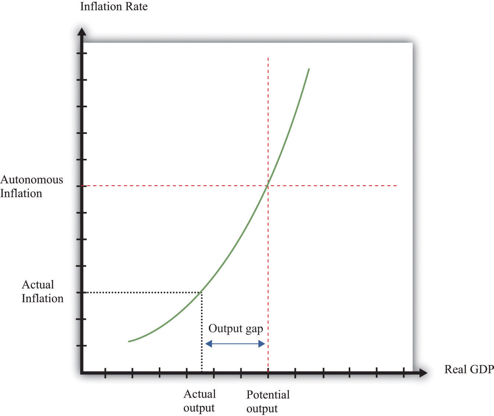
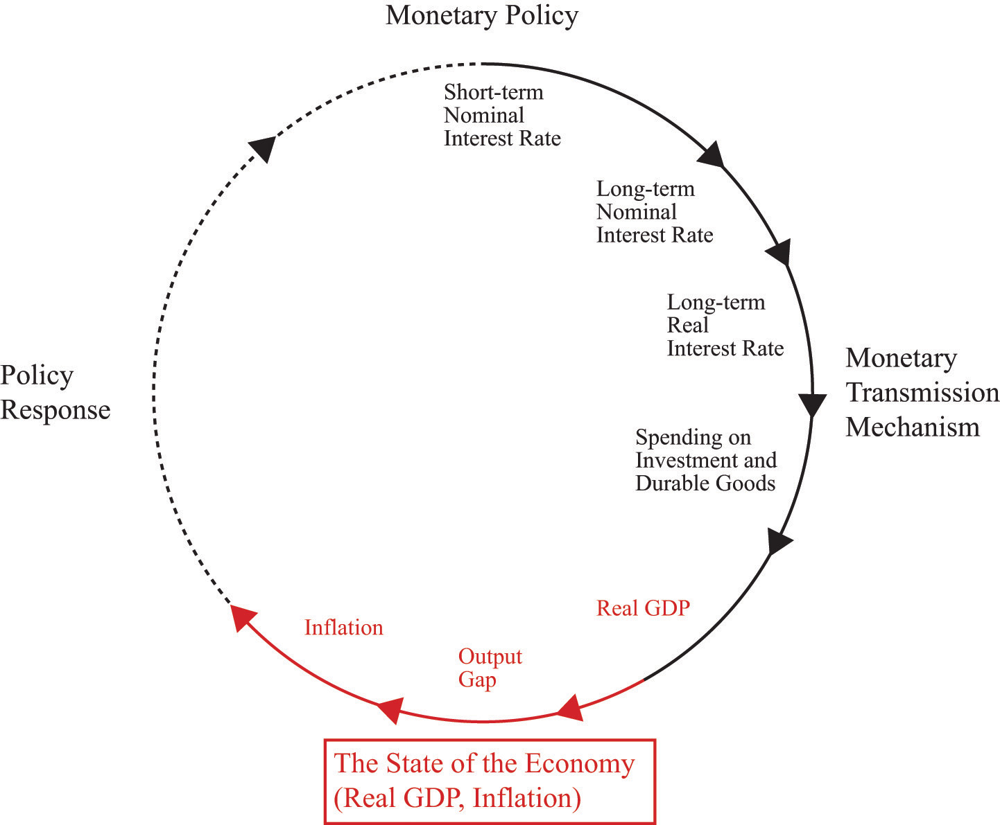
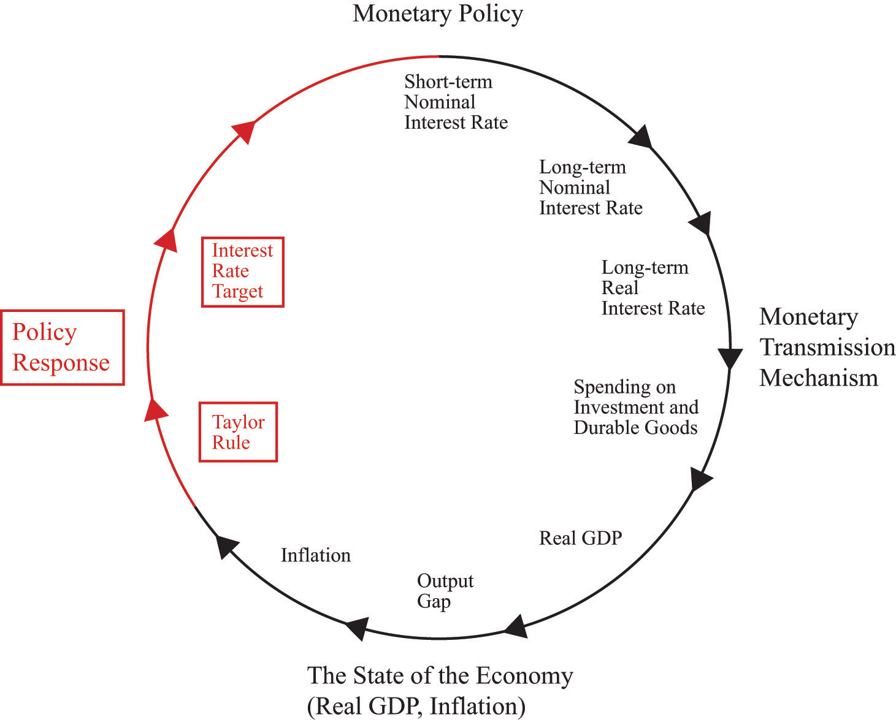
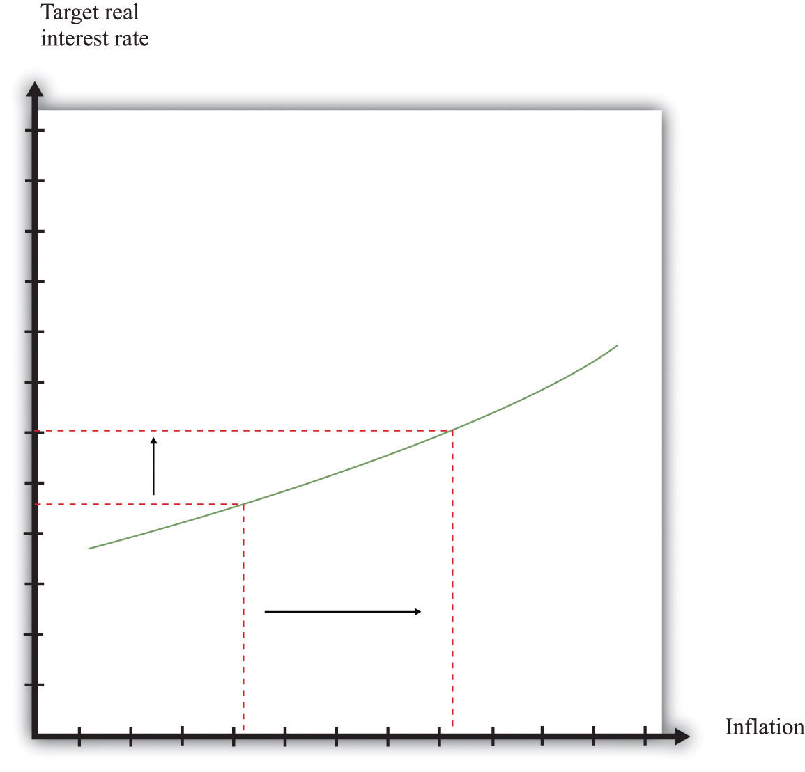
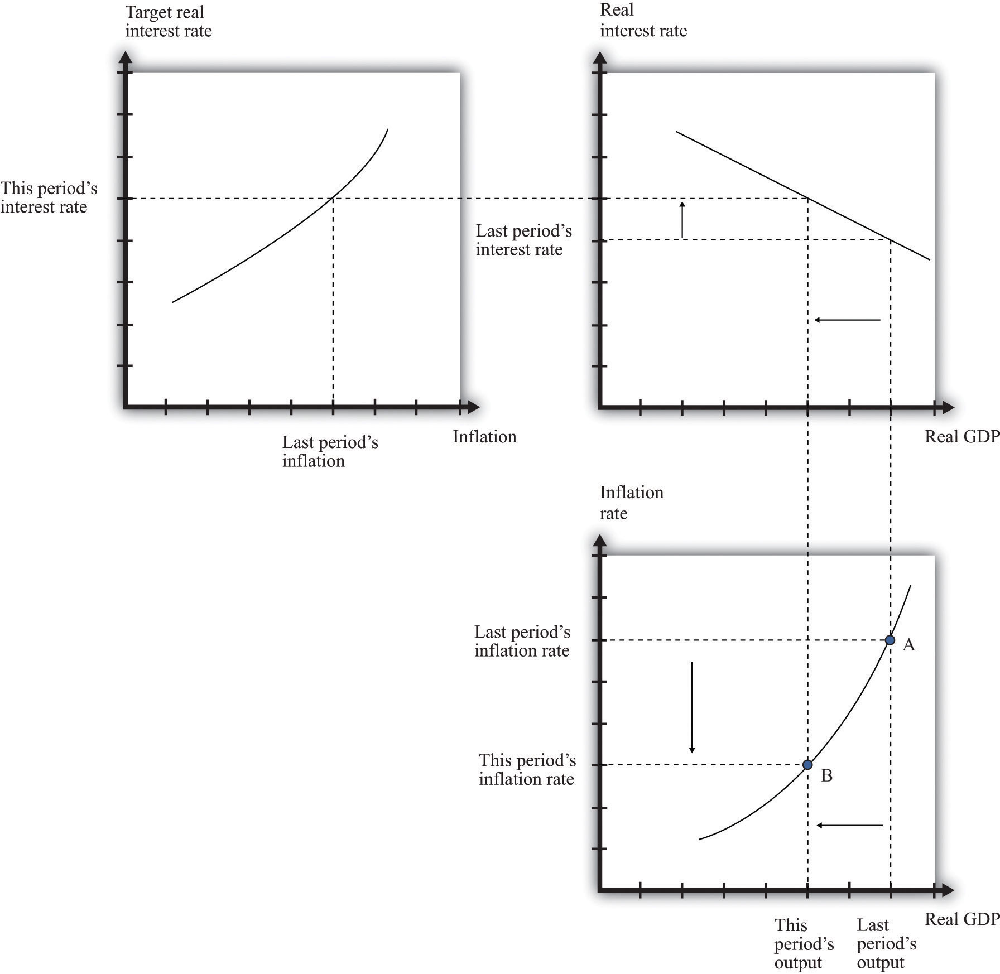

After you have read this section, you should be able to answer the following questions:
We now understand the effect of an interest rate increase on output. According to the monetary transmission mechanism, we expect that this will result in lower spending and a lower real gross domestic product (GDP). Remember, though, that the Fed is also charged with worrying about prices and inflation. Look back at the Federal Open Market Committee (FOMC) announcement with which we opened the chapter. Much of that announcement concerns inflation, not output. It states that “inflation and longer-term inflation expectations remain well contained,” that “underlying inflation [is] expected to be relatively low,” and that “the Committee will respond to changes in economic prospects as needed to fulfill its obligation to maintain price stability.”Federal Open Market Committee, “Press Release,” Federal Reserve, February 2, 2005, accessed July 20, 2011, http://www.federalreserve.gov/boarddocs/press/monetary/2005/20050202/default.htm.
The statements by the Bank of England, the Central Bank of Egypt, and the Reserve Bank of Australia likewise betray a strong concern with inflation. The policy of many central banks is directed toward the inflation rate. This policy, appropriately called inflation targeting, focuses the attention of the monetary authority squarely on forecasting inflation and then controlling inflation through its current policy choices.
The inflation rateThe growth rate of the price index from one year to the next. is defined as the growth rate of the overall price levelA measure of average prices in the economy.. In turn, the price level in the economy is based on the prices of all the goods and services in an economy. From one month to the next, some prices increase, others decrease, and still others stay the same. The overall inflation rate depends on what is happening to prices on average. If most prices are increasing and few are decreasing, then we expect to see inflation.
A complete explanation of inflation requires an understanding of all the decisions made by managers throughout the economy as they decide whether to change the prices of the goods and services that they sell. Some managers might find themselves facing increasing costs and strong demand for their product, so they would choose to increase prices. Others might have decreasing costs and weak demand, so they would choose to decrease prices. The overall inflation rate depends on the aggregation of these decisions throughout the economy and is summarized in a price adjustment equation. The price adjustment equation is shown in Figure 25.12 "Price Adjustment".
Toolkit: Section 31.31 "Price Adjustment"
The net effect of all the price-setting decisions of firms yields a price adjustment equation, which is as follows:
inflation rate = autonomous inflation − inflation sensitivity × output gap.The price adjustment equation summarizes, at the level of the entire economy, all the decisions about prices that are made by managers throughout the economy. It tells us that there are two reasons for increasing prices. The first is that there may be underlying (autonomous) inflation in the economy, even when it is at potential output. This depends, among other things, on the inflation rate that firms anticipate. The second reason for increasing prices is if the output gap is negative. The output gap is the difference between potential output and actual output:
output gap = potential real GDP − actual real GDP.A positive gap means that the economy is in recession—below potential output. If the economy is in a boom, then the output gap is negative.
Figure 25.12 Price Adjustment
The price-adjustment equation tells us that when real GDP is below potential output, the output gap is positive, and the actual inflation rate is below its autonomous level. The opposite is true if real GDP is above potential output.
The output gap matters for inflation because as GDP increases relative to potential output, labor and other inputs become scarcer. Firms see increasing costs and increase their prices as a consequence. The second term of the price adjustment equation shows that when real GDP is above potential output (the output gap is negative), there is upward pressure on prices in the economy. The inflation rate exceeds autonomous inflation. By contrast, when real GDP is below potential output (the output gap is negative), there is downward pressure on prices. The inflation rate is below the autonomous inflation rate. The “inflation sensitivity” tells us how responsive the inflation rate is to the output gap.
If the output gap were the only factor affecting prices in the economy, then we would often expect to see deflationA sustained decrease in the price level.—decreasing prices. In particular, we would see deflation whenever the economy was in a recession. Although the United States and some other economies have occasionally experienced deflation, it is relatively rare. We can conclude that there must be factors other than the output gap that cause inflation to be positive.
Autonomous inflation is the inflation rate that prevails in the economy when the economy is at potential output (the output gap is zero). In the United States in recent decades, the inflation rate has been positive but low, meaning that prices have been increasing on average but at a relatively slow rate. Autonomous inflation is typically positive because most economies have some growth of the overall money supply in the long run. A positive output gap then translates not into deflation but simply into an inflation rate below the level of autonomous inflation. Thus in the FOMC statement with which we opened this chapter, the discussion is not about how contractionary policy will cause deflation; it is about how this policy will moderate the inflation rate. Positive autonomous inflation means that firms will typically anticipate that their suppliers or their competitors are likely to increase prices in the future. A natural response is to increase prices, so actual inflation is positive.
Figure 25.13 Interactions among Interest Rates, Output, and Inflation
The monetary transmission mechanism teaches us that an increase in real interest rates reduces spending and hence leads to a reduction in real GDP. In the (very) short run, the reduction in spending translates directly into a decrease in real GDP because prices are fixed. The reduction in GDP increases the output gap in the economy. Our price adjustment equation tells us in turn that this will tend to reduce the inflation rate in the economy.
Some firms will then adjust prices very quickly to the changing economic conditions. We do not think that the price level in the economy is literally fixed—unable to move—for any significant period of time. That said, some firms are likely to keep their prices unchanged for several months, even in the face of changing economic conditions. Thus the adjustment of prices in the economy takes some time. It will be months, perhaps years, before all firms have adjusted their prices.
In summary, an increase in interest rates leads to a gradual reduction in the inflation rate in the economy. Contractionary monetary policy leads to a reduction in economic activity and, over time, lower inflation. US monetary policy in the early 1980s provides a good illustration. At the start of that decade, the inflation rate was over 10 percent. To reduce inflation, the Fed, under Chairman Paul Volcker, conducted a contractionary monetary policy that sharply increased real interest rates. The immediate result was a severe recession, and the eventual result was a reduction in inflation, just as the model suggests.
We have now traced the effects of monetary policy from interest rates to spending to real GDP to inflation. The effects of monetary policy do not stop there. Instead, as inflation adjusts in response to monetary policy, there is a feedback to interest rates through monetary policy itself. This is shown in Figure 25.14 "Completing the Circle of Monetary Policy".
Figure 25.14 Completing the Circle of Monetary Policy
We close the monetary policy circle by observing that the Fed’s policies depend on the state of the economy.
Observers of the Fed’s behavior over the past 20 or so years have argued that the Fed generally follows a rule that makes its choice of a target interest rate somewhat predictable. The rule that summarizes the behavior of the Fed is sometimes called the Taylor ruleA rule for monetary policy in which the target real interest rate increases when inflation is too high and decreases when output is too low.; it is named after John Taylor, an economist who first characterized Fed behavior in this manner.Comments on John Taylor’s career and his contributions to monetary economics by Fed Chairman Ben Bernanke are available at “Opening remarks to the Conference on John Taylor’s Contributions to Monetary Theory and Policy, Federal Reserve Bank of Dallas, Dallas, Texas,” Federal Reserve, October 12, 2007, accessed September 20, 2011, http://www.federalreserve.gov/newsevents/speech/bernanke20071012a.htm. The Taylor rule stipulates a relationship between the target interest rate and the state of the economy, typically represented by both the inflation rate and some measure of economic activity (such as the gap between actual and potential GDP). Usually, we think that the monetary authority operates with a lag so that the interest rate the monetary authority sets at a point in time reflects the output gap and inflation from the recent past. According to the Taylor rule, the Fed will increase real interest rates when
Conversely, the Fed will decrease real interest rates when
The Fed will want to increase interest rates and thus “put the brakes on the economy” when inflation is high and when they think that real GDP is above its long-run level (potential output). The Fed will want to decrease interest rates when inflation is relatively low and the economy is in a recession.
An example of a Taylor rule is shown in Figure 25.15 "The Taylor Rule". The vertical axis is the real interest rate target of the Fed, and the horizontal axis is the inflation rate. As the inflation rate increases, the Fed, according to this rule, then increases the interest rate.
Figure 25.15 The Taylor Rule
The monetary policy rule shows how the Fed adjusts real interest rates in response to changes in inflation rates. As inflation increases, the monetary authority targets a higher real interest rate.
The different pieces of the Taylor rule can be in conflict. For example, the Fed may face a situation where inflation is relatively high, yet the economy is in recession. The precise specification of the rule then provides guidance as to how the Fed trades off its inflation and output goals. The rule is largely descriptive: it summarizes in a succinct manner the actions of the Fed. In doing so, it allows individuals to predict with some accuracy what actions the Fed is likely to take in the future.
The Taylor rule describes Fed policy in terms of the real interest rate. We know, however, that the Fed actually targets a nominal rate. This has a surprising implication when we examine how the Fed responds to inflation. Suppose the Fed is currently meeting its target inflation rate—say, 3 percent—and the federal funds rate is currently 5 percent. The real interest rate is therefore 2 percent (remember the Fisher equation). Now suppose the Fed sees that inflation has increased from 3 percent to 4 percent. The increase in the inflation rate has the effect of decreasing the real interest rate—again, this comes directly from the Fisher equation. The real interest rate is now only 1 percent. Yet the Taylor rule tells us that the Fed wants to increase the real interest rate. To do so, it must increase nominal interest rates by more than the increase in the inflation rate. In our example, the inflation rate increased by one percentage point, so the Fed will have to increase its target for the federal funds rate by more than one percentage point—perhaps to 6.5 percent.
The Taylor rule completes the circle of monetary policy. As indicated by Figure 25.14 "Completing the Circle of Monetary Policy", the monetary policy rule links the state of the economy, represented by the inflation rate and the output gap, to the interest rate. There is usually a lag in the response of the Fed to the state of the economy. So, for example, the decision made at the FOMC meeting in February 2005 reflected information on the state of the economy through the end of 2004, at best.
We now have the three pieces we need to understand the relationship between monetary policy, inflation, and real GDP:
Together, these three pieces paint a complete picture of the monetary policy process. The top left panel in Figure 25.16 "The Adjustment of Inflation over Time" is taken from Figure 25.15 "The Taylor Rule" and shows a positive relationship between inflation and the real interest rate. The top right panel in Figure 25.16 "The Adjustment of Inflation over Time" is taken from Figure 25.10 "The Relationship between the Real Interest Rate and Real GDP" and shows the relationship between real GDP and the interest rate. As shown in the figure, the higher the real interest rate, the lower real GDP is. As a reminder, higher real interest rates lead to lower aggregate spending. Finally, from the price-setting equation, changes in real GDP lead to changes in the inflation rate. We showed this previously in Figure 25.12 "Price Adjustment", and it appears in the bottom right panel of Figure 25.16 "The Adjustment of Inflation over Time". If real GDP decreases, the output gap increases, and the inflation rate decreases.
We can use Figure 25.16 "The Adjustment of Inflation over Time" to summarize the conduct of monetary policy. In this diagram, we see the Taylor rule in action: the Fed sees high inflation and so increases the real interest rate.
We have simplified the discussion here in two ways. First, we neglected the fact that the output gap also enters into the Taylor rule. The basic idea remains the same in that more complicated case. Second, we did not discuss autonomous inflation. Autonomous inflation, remember, captures managers’ expectations of future inflation and future demand conditions. It, too, will tend to change over time. Theories of autonomous inflation are a subject for more advanced courses in macroeconomics.
Figure 25.16 The Adjustment of Inflation over Time
Last period the economy was at point A, with high output and high inflation. Because inflation is too high, the Fed increases the real interest rate (top left). This reduces this period’s output (top right), which in turn leads to a reduction in the inflation rate (bottom right). The economy ends up at point B.